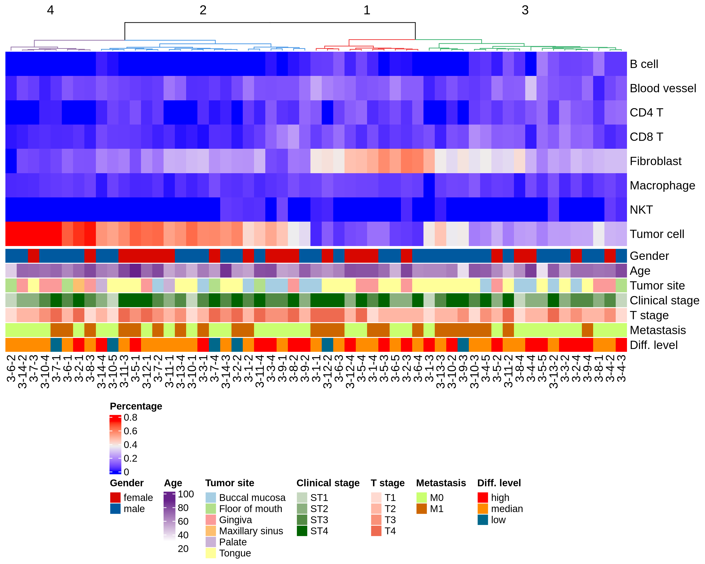
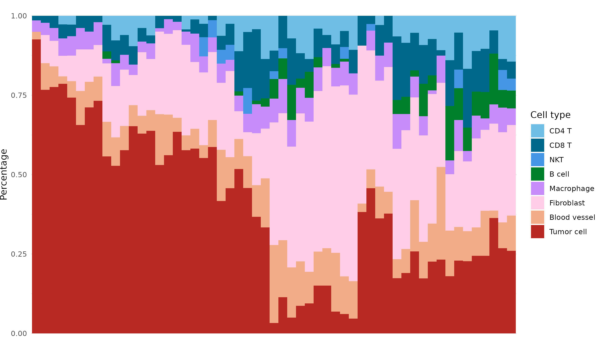
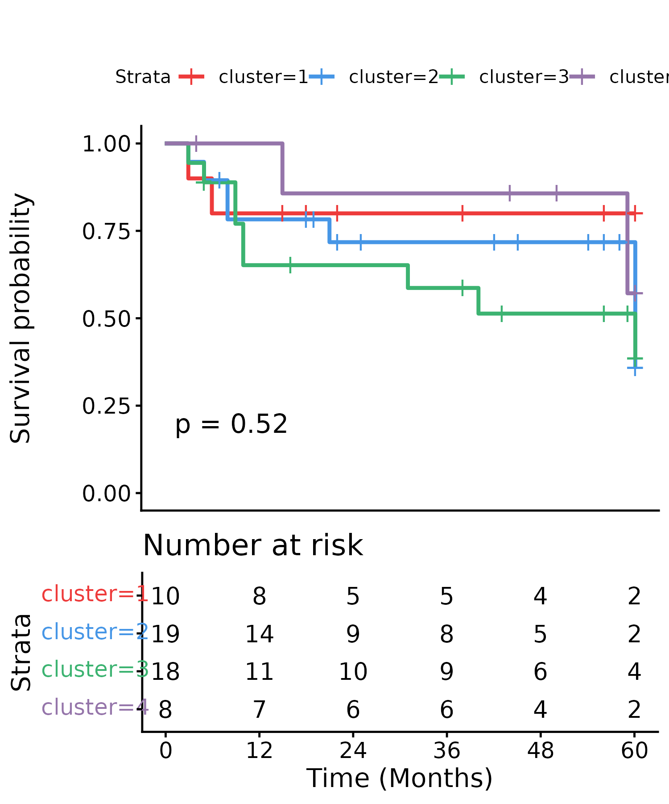
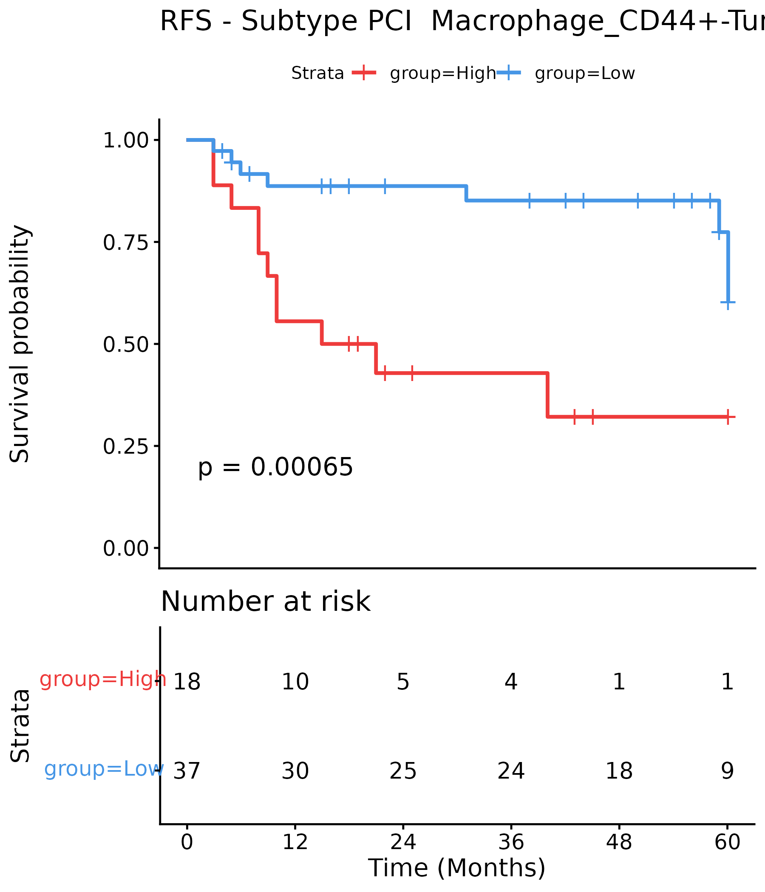
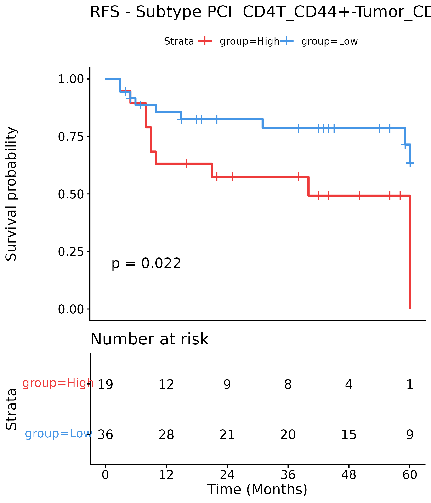
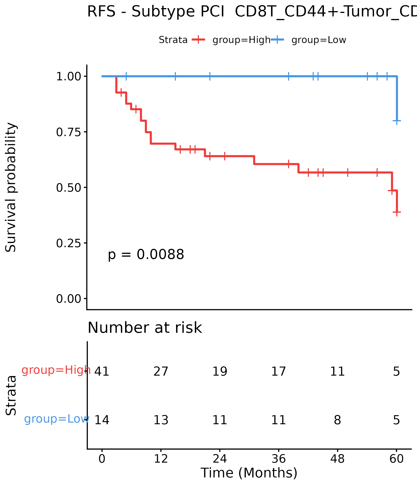
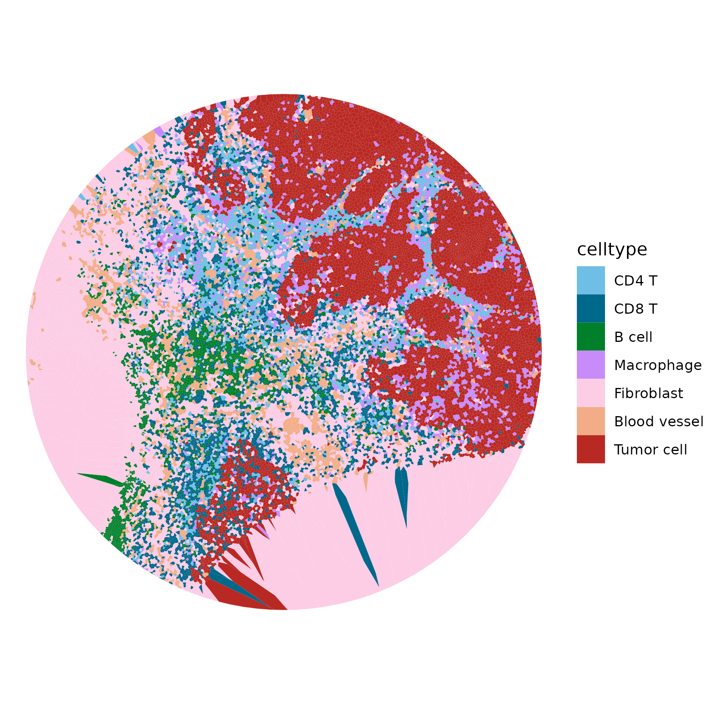
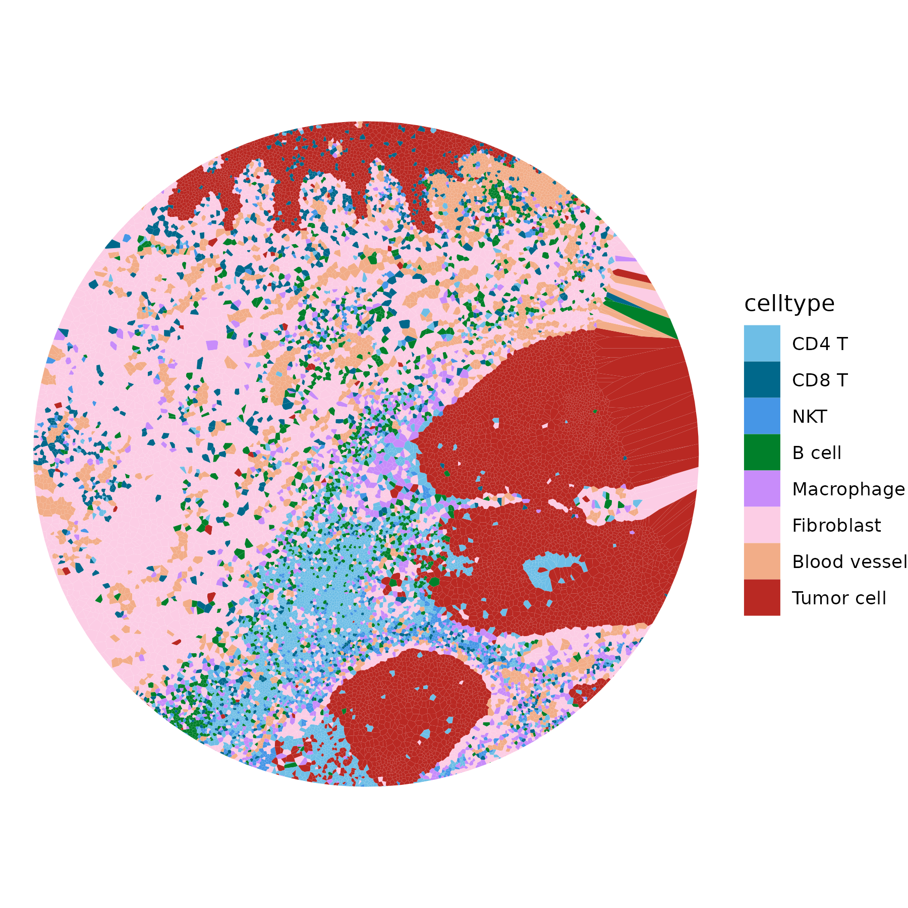
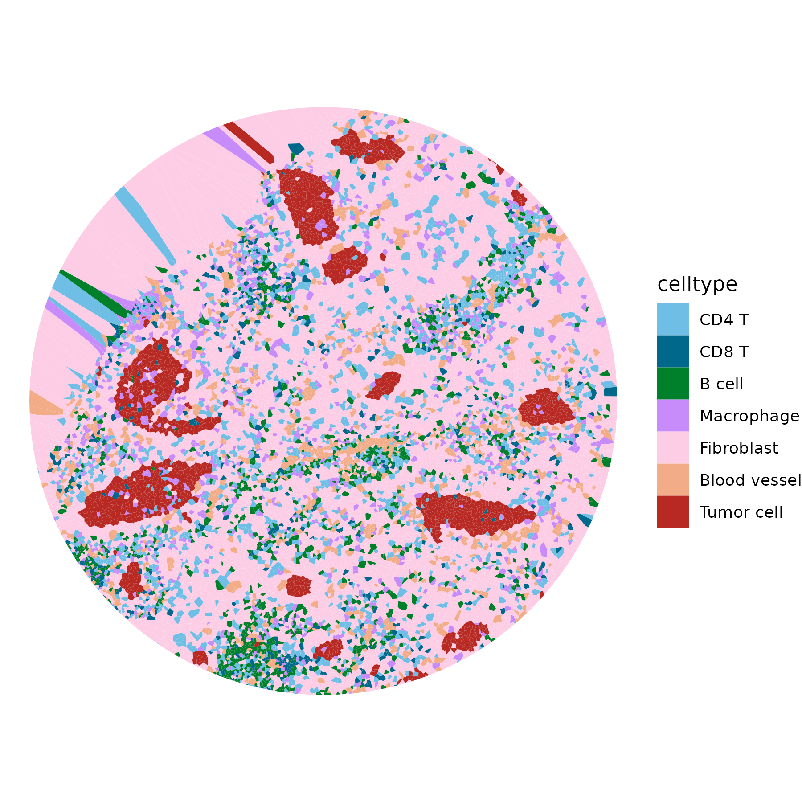

pkgs <- c("fs", "configr", "stringr",
"jhtools", "glue", "patchwork", "tidyverse", "dplyr", "Seurat", "magrittr",
"readxl", "writexl", "ComplexHeatmap",
"data.table", "ggplot2", "ggbeeswarm", "ggdendro", "dendextend", "deldir",
"sf", "corrplot", "ggpubr", "survival", "survminer", "forestmodel", "BiocParallel", "BiocNeighbors")
for (pkg in pkgs){
suppressPackageStartupMessages(library(pkg, character.only = T))
}
rds_dir <- "/cluster/home/lixiyue_jh/projects/stomatology/analysis/lvjiong/human/meta/manuscript/rds/codex"
fig_dir <- "/cluster/home/lixiyue_jh/projects/stomatology/analysis/lvjiong/human/meta/manuscript/figs/fig2_new"
# colors setting
config_fn = "/cluster/home/jhuang/projects/stomatology/analysis/lvjiong/human/meta/manuscript/configs/colors.yaml"
config_fn = "/cluster/home/lixiyue_jh/projects/quarto/stomatology_lvjiong/quarto_book/colors.yaml"
config_list <- show_me_the_colors(config_fn, "all")
colors_celltype <- config_list$cell_type
config <- read.config(config_fn)
cell_type_order <- config$cell_type_order
sampleinfo <- readRDS("/cluster/home/jhuang/projects/stomatology/docs/lvjiong/sampleinfo/sampleinfo.rds")
sampleinfo$codex <- sampleinfo$codex %>% mutate(
Time = case_when(Time > 60 ~ 60, TRUE ~ Time),
Status = case_when(Time > 60 ~ 0,TRUE ~ Status)
) %>% as.data.frame()9 CODEX
9.1 Package load and plot settings.
9.2 srt, celltype define heatmap
srt <- readRDS(glue("{rds_dir}/srt_split_anno.rds"))
Idents(srt) <- factor(srt$celltype, levels=intersect(config$cell_type_order, unique(srt$celltype)))
markers_10 <- c("CD45", "CD20", "CD3e", "Granzyme B", "CD4", "CD8", "CD68", "SMA", "CD31", "Pan-Cytokeratin")
srt_sub <- subset(srt, downsample = 200, features = markers_10)
p <- DoHeatmap(srt_sub, slot = "scale.data", assay = "CODEX", features = markers_10,
group.colors = config_list$cell_type, angle = 90, size = 4, disp.min = -2.5, disp.max = 2.5) +
NoLegend()
ggsave(glue("{fig_dir}/heatmap_celltype_markers_10_200cell.pdf"), p, width = 8, height = 6)
ggsave(glue("{fig_dir}/heatmap_celltype_markers_10_200cell.png"), p, width = 8, height = 6)
list_markers <- list("CD4 T" = c("CD45RO", "CD44", "Granzyme B", "HLA-DR", "Ki67", "PD-1", "FOXP3"),
"CD8 T" = c("CD45RO", "CD44", "Granzyme B", "HLA-DR", "Ki67", "PD-1"),
"Macrophage" = c("CD14", "CD44", "HLA-DR", "IDO1", "Ki67", "Vimentin", "PD-L1"),
"Tumor cell" = c("CD44", "E-cadherin", "IDO1", "HLA-DR", "Vimentin", "Ki67", "PD-L1"),
"Fibroblast" = c("CD44", "SMA", "IDO1", "HLA-DR", "Collagen-IV", "Ki67", "PD-L1"))
cell_type_order_sub <- config$cell_type_order[70:113]
for (cell_type in names(list_markers)){
sub_markers <- list_markers[[cell_type]]
Idents(srt) <- "subtype"
srt_sub <- subset(srt, downsample = 200, features = sub_markers, subset = (celltype == cell_type & !is.na(subtype)))
srt_sub$subtype <- factor(srt_sub$subtype, levels = intersect(cell_type_order_sub, unique(srt_sub$subtype)))
Idents(srt_sub) <- "subtype"
colors <- config_list$cell_type[1:length(unique(srt_sub$subtype))]
p <- DoHeatmap(srt_sub, slot = "scale.data", assay = "CODEX", features = sub_markers, raster = TRUE,
group.colors = colors, angle = 90, size = 4, disp.min = -2.5, disp.max = 2.5)
NoLegend()
name = str_replace_all(cell_type, " ", "")
ggsave(glue("{fig_dir}/heatmap_subtype_{name}_markers_200cell.pdf"), p, dpi = 800, width = 8, height = 6)
ggsave(glue("{fig_dir}/heatmap_subtype_{name}_markers_200cell.png"), p, dpi = 800, width = 8, height = 6)
}{kind=link}
{kind=link}
9.3 Barplot: stacked celltype frequency
codex_cluster <- readRDS(glue("{rds_dir}/codex_cluster_plot.rds"))
results <- codex_cluster$celltype_cluster
mat <- results$mat
df_anno <- results$df_anno
df_cluster <- results$df_cluster
dend <- results$dend
hc <- results$hc
cl <- results$cl
color_use <- config_list$cluster[unique(cl[labels(dend)])]
ha <- HeatmapAnnotation(df = df_anno %>% dplyr::select(-`Age level`),
col = list(
Age = circlize::colorRamp2(c(30, 90), config_list$Age_color),
Gender = config_list$Gender,
`Tumor site` = config_list$tumor_site,
`Diff. level` = config_list$diff_level,
`Clinical stage` = config_list$clinical_stage,
`T stage` = config_list$T_stage,
Metastasis = config_list$Metastasis))
ht <- Heatmap(t(mat),
name = "Percentage",
cluster_columns = dend,
cluster_rows = F,
show_column_names = T,
column_split = 4,
column_title = unique(cl[hc$order]),
column_gap = unit(0, "mm"),
bottom_annotation = ha)
df <- df_cluster %>%
mutate(celltype = factor(celltype, levels = intersect(cell_type_order, unique(df_cluster$celltype))),
sample_id = factor(sample_id, levels = labels(dend)))
p_bar <- ggplot(df, aes(sample_id, freq, fill = celltype)) +
geom_col(width = 1, color = NA) +
scale_fill_manual(values = config_list$cell_type) +
labs(x = "", y = "Percentage", fill = "Cell type") +
theme_minimal() +
theme(axis.text.x = element_blank(),
panel.grid.major.x = element_blank(),
plot.margin = margin(0,0,0,0))
pdf(glue("{fig_dir}/heatmap_celltype_freq.pdf"), width = 10, height = 8)
ht <- draw(ht, heatmap_legend_side = "bottom", annotation_legend_side = "bottom")
dev.off()
png(glue("{fig_dir}/heatmap_celltype_freq.png"), width = 10, height = 8, units = "in", res = 300)
ht <- draw(ht, heatmap_legend_side = "bottom", annotation_legend_side = "bottom")
dev.off()
ggsave(glue("{fig_dir}/stacked_bar_celltype_freq.pdf"), p_bar, width = 10, height = 6)
ggsave(glue("{fig_dir}/stacked_bar_celltype_freq.png"), p_bar, width = 10, height = 6)
df <- df_anno %>% mutate(sample_id = rownames(.)) %>% left_join(df_cluster, by = "sample_id") %>%
mutate(cluster = factor(paste("G", cluster, sep = ""), levels = paste("G", 1:4, sep = "")))
colorM <- list("Gender"="Gender", "Age level"="Age_level", "Tumor site"="tumor_site",
"Diff. level"="diff_level", "Metastasis"="Metastasis", `Clinical stage`="clinical_stage", `T stage`="T_stage")
for (barname in names(colorM)){
color_name = colorM[[barname]]
p <- ggplot(df, aes(x = .data[["cluster"]], fill = .data[[barname]])) +
geom_bar(position = "fill", width = 0.8) +
scale_fill_manual(values=config_list[[color_name]]) +
theme_classic() +
labs(y = "Proportion", x = "", fill = barname) +
scale_y_continuous(labels = scales::comma) +
theme(axis.text.x = element_text(angle = 0, hjust = 0.5, vjust = 1))
ggsave(glue("{fig_dir}/stacked_bar_celltype_cluster_clinical_{color_name}.pdf"), p, width = 4, height = 4)
ggsave(glue("{fig_dir}/stacked_bar_celltype_cluster_clinical_{color_name}.png"), p, width = 4, height = 4)
}
spinfo <- sampleinfo$codex %>% filter(Type == "Tumor")
df_out <- tidyr::pivot_wider(df, id_cols = c(sample_id, cluster), names_from = celltype, values_from = freq, values_fill = 0) %>% arrange(sample_id)
df_surv <- df_out %>% select(sample_id, cluster) %>% left_join(spinfo) %>% na.omit() %>% mutate(cluster = str_replace_all(cluster, "G", ""))
fit <- survfit(Surv(Time, Status) ~ cluster, data = df_surv)
names(color_use) <- paste0("cluster=",names(color_use))
p <- ggsurvplot(fit, data = df_surv, xlab = "Time (Months)", pval = TRUE, risk.table = TRUE,
break.x.by = 12, xlim = c(0,60),
risk.table.height = 0.35, palette = color_use, title = "")
p$plot <- p$plot +
theme(axis.title.x = element_blank(), axis.text.x = element_blank(), axis.ticks.x = element_blank(),
plot.margin = margin(t = 5.5, r = 5.5, b = 6.5, l = 5.5))
p <- arrange_ggsurvplots(list(p), ncol = 1, print = FALSE)
ggsave(glue("{fig_dir}/survival_curve_celltype_freq_cluster.pdf"), p, width = 5, height = 6)
ggsave(glue("{fig_dir}/survival_curve_celltype_freq_cluster.png"), p, width = 5, height = 6)  
{kind=link}
{kind=link}
{kind=link}
##celltype_cn, heatmap_celltype_cn_composition
codex_cluster <- readRDS(glue("{rds_dir}/codex_cluster_plot.rds"))
results <- codex_cluster$celltype_CN
mat <- results$mat
dt_anno <- results$dt_anno
bar_colors <- config_list$cell_type[colnames(mat)]
ha <- rowAnnotation(CN = anno_barplot(mat,
bar_width = 1,
gp = gpar(fill = bar_colors),
border = FALSE,
axis = TRUE,
axis_param = list(direction = "reverse"),
width = unit(4, "cm")),
show_annotation_name = FALSE)
lgd_list <- list(Legend(labels = colnames(mat), title = "Cell type", legend_gp = gpar(fill = bar_colors)))
row_labels <- structure(paste(dt_anno$cn, dt_anno$anno), names = dt_anno$cn)
ht <- Heatmap(scale(mat), name = "Relative enrichment",
col = circlize::colorRamp2(c(-3, -2, -1, 0, 1, 2, 3), config_list$scale_7),
right_annotation = ha,
cluster_rows = TRUE,
cluster_columns = TRUE,
row_labels = row_labels[rownames(mat)])
pdf(glue("{fig_dir}/heatmap_celltype_cn_composition.pdf"), width = 10, height = 6)
draw(ht, heatmap_legend_list = lgd_list)
dev.off()
png(glue("{fig_dir}/heatmap_celltype_cn_composition.png"), width = 10, height = 6, units = "in", res = 300)
draw(ht, heatmap_legend_list = lgd_list)
dev.off(){kind=link}
##subtype_cn, heatmap_subtype_cn_composition
codex_cluster <- readRDS(glue("{rds_dir}/codex_cluster_plot.rds"))
results <- codex_cluster$subtype_CN
mat <- results$mat
df_anno <- results$df_anno
dt_anno <- results$dt_anno
mat <- scale(mat)
celltype = c("CD4T", "CD8T", "NKT", "B cell", "Macrophage", "Fibroblast", "Blood vessel", "Tumor")
df_anno <- df_anno[, match(celltype, colnames(df_anno))]
celltype = c("CD4 T", "CD8 T", "NKT", "B cell", "Macrophage", "Fibroblast", "Blood vessel", "Tumor cell")
names(df_anno) <- celltype
bar_colors <- config_list$cell_type[celltype]
ha <- rowAnnotation(CN = anno_barplot(df_anno,
bar_width = 1,
gp = gpar(fill = bar_colors),
border = FALSE,
axis = TRUE,
axis_param = list(direction = "reverse"),
width = unit(3, "cm")),
show_annotation_name = FALSE)
lgd_list <- list(Legend(labels = celltype, title = "Cell type", legend_gp = gpar(fill = bar_colors)))
row_labels <- structure(paste(dt_anno$cn, dt_anno$anno), names = dt_anno$cn)
ht <- Heatmap(mat, name = "Relative enrichment",
col = circlize::colorRamp2(c(-2, -1, 0, 2, 4, 6), config_list$scale_6),
right_annotation = ha,
cluster_rows = TRUE,
cluster_columns = TRUE,
row_labels = row_labels[rownames(mat)])
pdf(glue("{fig_dir}/heatmap_subtype_cn_composition.pdf"), width = 15, height = 12)
draw(ht, heatmap_legend_list = lgd_list, padding = unit(c(10, 2, 2, 30), "mm"), heatmap_legend_side = "bottom")
dev.off()
png(glue("{fig_dir}/heatmap_subtype_cn_composition.png"), width = 15, height = 12, units = "in", res = 300)
draw(ht, heatmap_legend_list = lgd_list, padding = unit(c(10, 2, 2, 30), "mm"), heatmap_legend_side = "bottom")
dev.off(){kind=link}
##celltype_cn, sample_cluster_heatmap_celltype_cn, surv curve
codex_cluster <- readRDS(glue("{rds_dir}/codex_cluster_plot.rds"))
results <- codex_cluster$celltype_CN_cluster
mat <- results$mat
df_anno <- results$df_anno
dt_anno <- results$dt_anno
dend <- results$dend
hc <- results$hc
cl <- results$cl
color_use <- config_list$cluster[unique(cl[labels(dend)])]
col_labels <- structure(paste(dt_anno$cn, dt_anno$anno), names = dt_anno$cn)
ha <- rowAnnotation(df = df_anno %>% dplyr::select(sample_id, cluster) %>% column_to_rownames("sample_id"),
col = list(cluster = color_use))
ht <- Heatmap(mat, name = "Percentage",
col = circlize::colorRamp2(c(0, 25, 50, 65, 80, 100), config_list$scale_6),
cluster_rows = dend,
cluster_columns = TRUE,
column_labels = col_labels[colnames(mat)],
show_row_names = FALSE,
left_annotation = ha)
pdf(glue("{fig_dir}/sample_cluster_heatmap_celltype_cn.pdf"), width = 6, height = 8)
ht <- draw(ht, padding = unit(c(2, 2, 2, 2), "mm"))
dev.off()
png(glue("{fig_dir}/sample_cluster_heatmap_celltype_cn.png"), width = 6, height = 8, units = "in", res = 300)
ht <- draw(ht, padding = unit(c(2, 2, 2, 2), "mm"))
dev.off()
df_surv <- df_anno %>% filter(Type == "Tumor")
fit <- survfit(Surv(Time, Status) ~ cluster, data = df_surv)
names(color_use) <- paste0("cluster=",names(color_use))
p <- ggsurvplot(fit, data = df_surv, xlab = "Time (Months)", pval = TRUE, risk.table = TRUE,
risk.table.height = 0.35, palette = color_use, break.x.by = 12, xlim = c(0,60),
title = "RFS - Celltype CN cluster")
p$plot <- p$plot + theme(axis.title.x = element_blank(), axis.text.x = element_blank(), axis.ticks.x = element_blank(),
plot.margin = margin(t = 5.5, r = 5.5, b = 6.5, l = 5.5))
p <- arrange_ggsurvplots(list(p), ncol = 1, print = FALSE)
ggsave(glue("{fig_dir}/sample_cluster_surv_curve_celltype_cn.pdf"), p, width = 5, height = 6)
ggsave(glue("{fig_dir}/sample_cluster_surv_curve_celltype_cn.png"), p, width = 5, height = 6){kind=link}
##subtype_cn, sample_cluster_heatmap_subtype_cn, survival_curve (k=10, cl=5)
codex_cluster <- readRDS(glue("{rds_dir}/codex_cluster_plot.rds"))
results <- codex_cluster$subtype_CN_cluster
mat <- results$mat
df_anno <- results$df_anno
dt_anno <- results$dt_anno
dend <- results$dend
hc <- results$hc
cl <- results$cl
row_labels <- structure(paste(dt_anno$cn, dt_anno$anno), names = dt_anno$cn)
color_use <- config_list$cluster[unique(cl[labels(dend)])]
ha <- HeatmapAnnotation(df = df_anno %>% dplyr::select(sample_id, cluster) %>% column_to_rownames("sample_id"), col = list(cluster = color_use[1:10]))
ht <- Heatmap(mat, name = "z-score",
col = circlize::colorRamp2(c(0, 1, 2, 3, 4, 5), config_list$scale_6),
cluster_rows = TRUE,
cluster_columns = TRUE,
row_labels = row_labels[rownames(mat)],
show_column_names = FALSE,
column_split = 10,
column_title = unique(cl[hc$order]),
top_annotation = ha
)
pdf(glue("{fig_dir}/sample_cluster_heatmap_subtype_cn.pdf"), width = 12, height = 6)
ht <- draw(ht, padding = unit(c(2, 2, 2, 20), "mm"))
dev.off()
png(glue("{fig_dir}/sample_cluster_heatmap_subtype_cn.png"), width = 12, height = 6, units = "in", res = 300)
ht <- draw(ht, padding = unit(c(2, 2, 2, 20), "mm"))
dev.off()
i = 5
df_surv <- df_anno %>% filter(Type == "Tumor") %>% mutate(cluster = as.character(cluster))
df_surv$cluster[df_surv$cluster != i] <- "others"
fit <- survfit(Surv(Time, Status) ~ cluster, data = df_surv)
p <- ggsurvplot(fit, data = df_surv, xlab = "Time (Months)", pval = TRUE, risk.table = TRUE,
risk.table.height = 0.35, break.x.by = 12, xlim = c(0,60),
palette = config_list$split_2,
title = paste0("RFS - Subtype CN cluster", i))
p$plot <- p$plot + theme(axis.title.x = element_blank(), axis.text.x = element_blank(), axis.ticks.x = element_blank(),
plot.margin = margin(t = 5.5, r = 5.5, b = 6.5, l = 5.5))
p <- arrange_ggsurvplots(list(p), ncol = 1, print = FALSE)
ggsave(glue("{fig_dir}/sample_cluster_surv_curve_subtype_cn_cl{i}.pdf"), p, width = 5, height = 6)
ggsave(glue("{fig_dir}/sample_cluster_surv_curve_subtype_cn_cl{i}.png"), p, width = 5, height = 6){kind=link}
{kind=link}
##pairwise cell interaction (subtype): Macrophage_CD44+ - Tumor_CD44+; CD4T_CD44+ - Tumor_CD44+; CD8T_CD44+ - Tumor_CD44+;
lst_pci_message <- readRDS(glue("{rds_dir}/pci_message.rds"))
df_res2 <- lst_pci_message$df_res
df_surv2 <- lst_pci_message$df_surv
pair_fig = list()
pair2 <- c("Macrophage_CD44+-Tumor_CD44+", "CD4T_CD44+-Tumor_CD44+", "CD8T_CD44+-Tumor_CD44+")
#pair2 <- df_res2 %>% filter(pval < 0.05) %>% pull(var)
for(pair in pair2){
cut <- surv_cutpoint(df_surv2, time = "Time", event = "Status", variables = pair)
cp <- cut$cutpoint$cutpoint
dt_grp <- cut$data %>% mutate(
Time = case_when(Time > 60 ~ 60, TRUE ~ Time),
Status = case_when(Time > 60 ~ 0,TRUE ~ Status)
) %>% as.data.frame()
dt_grp$group <- ifelse(dt_grp[, pair] > cp, "High", "Low")
form <- as.formula("Surv(Time, Status) ~ group")
fit <- surv_fit(formula = form, data = dt_grp)
p <- ggsurvplot(fit, data = dt_grp, xlab = "Time (Months)", pval = TRUE, risk.table = TRUE,
risk.table.height = 0.35, break.x.by = 12, xlim = c(0,60),
palette = config_list$split_2,
title = paste("RFS - Subtype PCI ", pair,
ggtheme = theme_classic()))
p$plot <- p$plot + theme(axis.title.x = element_blank(), axis.text.x = element_blank(), axis.ticks.x = element_blank(),
plot.margin = margin(t = 5.5, r = 5.5, b = 6.5, l = 5.5))
p <- arrange_ggsurvplots(list(p), ncol = 1, print = FALSE)
ggsave(glue("{fig_dir}/surv_curve_pci_subtype_{pair}.pdf"), p, width = 6, height = 7)
ggsave(glue("{fig_dir}/surv_curve_pci_subtype_{pair}.png"), p, width = 6, height = 7)
pair_fig[pair] <- p
}  
{kind=link}
{kind=link}
{kind=link}
##voronoi plot in situ message: 3-2-4, 3-4-3, 3-5-4
lst_sf_invert <- readRDS(glue("{rds_dir}/sf_invert_insitu_celltype_message.rds"))
voronoi_fig <- list()
Images <- c("3-2-4", "3-4-3", "3-5-4", "3-12-4")
for(img in Images){
sf_invert <- lst_sf_invert[[img]]
# plot
p <- ggplot() +
geom_sf(data = sf_invert, aes(fill = celltype), linewidth = 0.001, color = "white") +
scale_fill_manual(values = config_list$cell_type) +
theme_void()
ggsave(glue("{fig_dir}/voronoi_{img}_spatial_celltype_map.pdf"), p, width = 6, height = 6)
ggsave(glue("{fig_dir}/voronoi_{img}_spatial_celltype_map.png"), p, width = 6, height = 6)
voronoi_fig[[img]] <- p
}  
{kind=link}
{kind=link}
{kind=link}
##voronoi plot in situ message: 3-2-4 subtype CN
lst_sf_invert <- readRDS(glue("{rds_dir}/sf_invert_insitu_subtype_message.rds"))
imgs = c("3-2-4")
for(img in imgs){
sf_invert <- lst_sf_invert[[img]]
sf_invert <- sf_invert %>% mutate(subtype_cn = factor(subtype_cn, levels = names(config_list$CN_subtype)))
p <- ggplot() +
geom_sf(data = sf_invert, aes(fill = subtype_cn), linewidth = 0.001, color = "white") +
scale_fill_manual(values = config_list$CN_subtype) +
theme_void()
ggsave(glue("{fig_dir}/voronoi_{img}_spatial_subtype_cn_top_map.pdf"), p, width = 6, height = 6)
ggsave(glue("{fig_dir}/voronoi_{img}_spatial_subtype_cn_top_map.png"), p, width = 6, height = 6)
}{kind=link}
##barplot of immune_cell_proportion_in_erosion_zone
dt <- readRDS(glue("{rds_dir}/erosion_zone_immune_cell_count.rds"))
p <- ggplot(dt, aes(sample_id, count, fill = celltype)) +
geom_bar(position = "fill", stat = "identity", width = 0.7) +
scale_fill_manual(values = config_list$cell_type) +
labs(x = "", y = "Proportion") +
theme_classic()
ggsave(glue("{fig_dir}/immune_cell_proportion_in_erosion_zone.pdf"), p, width = 6, height = 6)
ggsave(glue("{fig_dir}/immune_cell_proportion_in_erosion_zone.png"), p, width = 6, height = 6){kind=link}
##pci & cor: heatmap of subtype pci and cor
subtype_cor_pci <- readRDS(glue("{rds_dir}/subtype_cor_pci_result.rds"))
df_pci <- subtype_cor_pci$df_pci_long
df_cor <- subtype_cor_pci$df_cor_long
p <- ggplot() +
geom_tile(data = df_pci, mapping = aes(x = cluster2, y = cluster1, fill = mean_log2_lr)) +
scale_fill_gradientn(name = "PCI",
limits = c(-6, 6),
breaks = seq(-4, 4, 2),
colors = config_list$scale_7,
values = scales::rescale(c(-4, 0, 4))) +
geom_point(data = df_cor, shape = 19, alpha = 1,
mapping = aes(x = cluster2, y = cluster1,
color = ifelse(correlation < 0, "Negative", "Positive"),
size = abs(correlation))) +
scale_color_manual(values = config_list$pci_point_map, name = "Correlation") + # 颜色映射
scale_size_continuous(range = c(0, 4), limits = c(0, 1),
breaks = seq(0, 1, 0.25), name = "|Correlation|") +
theme_classic() +
theme(axis.text.x = element_text(angle = 90, hjust = 1, vjust = 1),
plot.margin = unit(c(1, 1.5, 1, 1), "cm")) +
guides(size = guide_legend(override.aes = list(shape = 21, fill = NA, color = "black", stroke = 0.5))) +
xlab(NULL) +
ylab(NULL)
ggsave(glue("{fig_dir}/heatmap_subtype_pci_cor.pdf"), p, width = 18, height = 16)
ggsave(glue("{fig_dir}/heatmap_subtype_pci_cor.png"), p, width = 18, height = 16){kind=link}